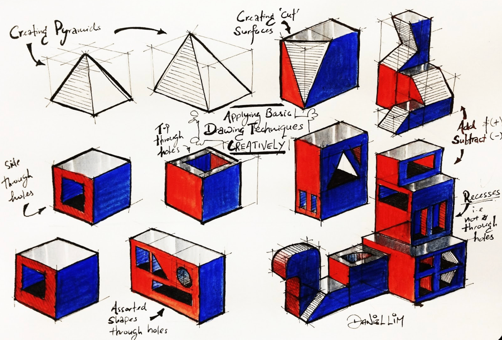
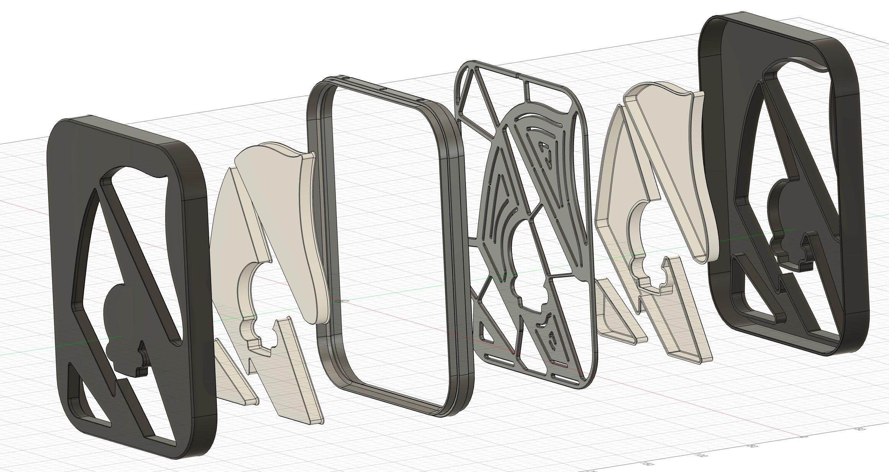
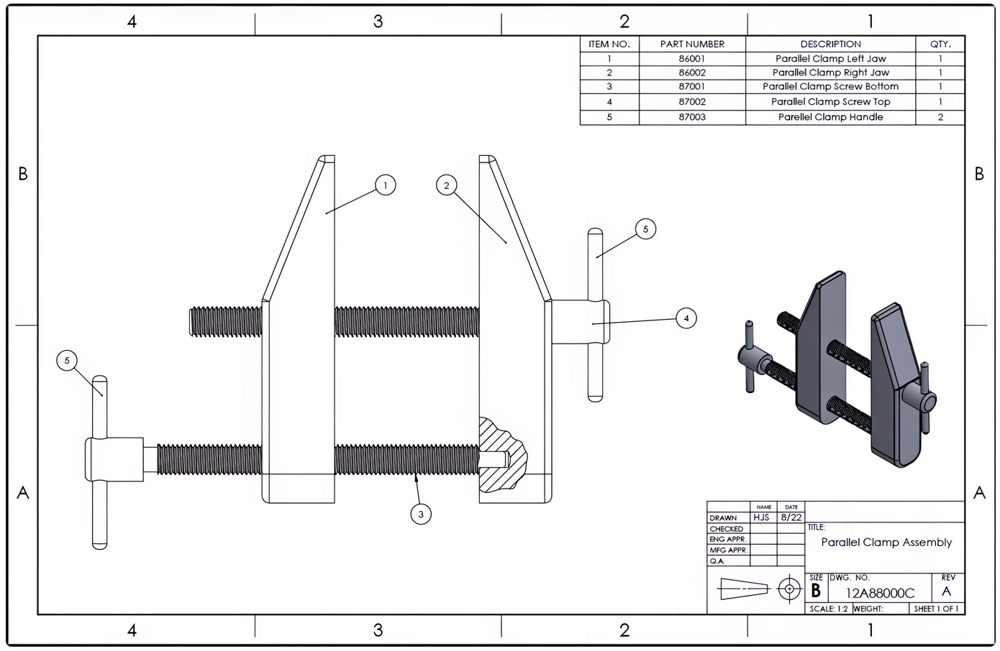
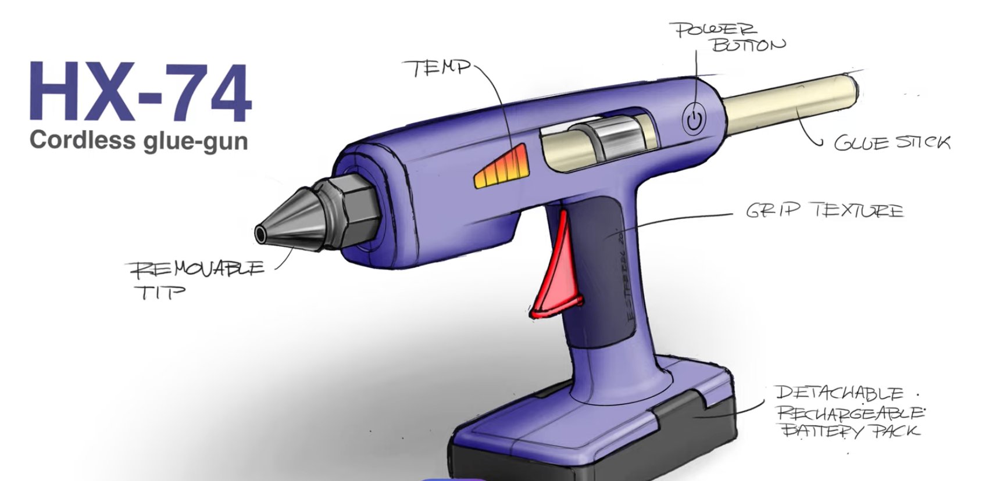

Overview and teacher commentary will appear here.
Modelling and prototyping encompasses 2D drawing conventions, physical models at varying fidelity, CAD (surface, solid and virtual), finite element analysis, rapid prototyping techniques, and selecting the right prototype for each audience.
Students must be able toConstruct and interpret 2D drawings and 3D models, including isometric, orthographic projection, assembly and exploded drawings.
Drawings are the most fundamental form of design communication: they allow designers to share ideas with manufacturers, engineers, clients and users without requiring physical models. Different drawing types serve different audiences and purposes:
{kind=link}

Isometric drawings
Isometric drawings present an object from a corner viewpoint using 30° angles for all horizontal edges. The name comes from the Greek "equal measurement" because true dimensions are preserved along all three axes. Three sides of the object are visible simultaneously, making isometric drawings well suited for presentations to audiences with limited technical training.
{kind=link}
Computer games have made use of an isometric perspective for years, first as a way to 'cheat' and have a game with flat drawings appear 3D, and later as a stylistic choice. Older strategy games such as Starcraft and Age of Empires are good examples of using flat art assets to appear 3D (see the screenshot above) while Hades is a modern example of a game that actually uses 3D assets but retains the isometric perspective.
{kind=link}
Orthographic projection
Orthographic projection presents multiple 2D views (typically front, top and side) each projected perpendicularly onto a plane. Together, the views communicate exact dimensions, tolerances and surface specifications. This is the standard for manufacturing and engineering, and most of the time enough measurements and views are available for someone to create an accurate model from a set of orthographic views. (See CAD vs CAD on YouTube for a particularly fun example of orthographic projections being modeled.)
{kind=link}

Exploded drawings
Exploded drawings show how components separate along their assembly axes so the viewer can understand how parts fit together. One of the earliest known examples was created by Leonardo da Vinci around 1478–1480. (See it and more on the Wikipedia page for exploded views.) This type of drawing is particularly useful for understanding complex assemblies and ensuring that all parts are correctly positioned.
{kind=link}

Assembly drawings
Assembly drawings show how multiple components come together into a functional system or assembled part. They typically include a Bill of Materials (BoM), a numbered list of every part, and linked to callout labels on the drawing. Lego provide assembly instructions, but each page could be used as a small example of this, since they include the 'bill of materials' for that page, along with the assembled drawings and visual callouts showing where each part goes.
{kind=link}

Perspective renderings
Perspective renderings use one or more vanishing points to create a realistic sense of depth. They do not preserve true dimensions but communicate the overall appearance and feel of a product convincingly to non-technical clients and investors. They're also a great excuse to use way more colors in your work.
图纸是最基本的设计交流形式——它们允许设计师与制造商、工程师、客户和用户分享想法，无需物理模型。不同的图纸类型服务于不同的受众和目的：
- 等轴测图从角落视角展示物体，所有水平边缘使用30°角。该名称来源于希腊语"等量测量"，因为沿三个轴的真实尺寸都得以保留。物体的三个面同时可见，使等轴测图非常适合向技术培训有限的受众展示。
- 正交投影图展示多个二维视图——通常是正面、顶部和侧面——每个视图垂直投影到平面上。这些视图共同传达精确的尺寸、公差和表面规格。这是制造业和工程领域的标准，因为它对形状和尺寸没有任何歧义。
- 爆炸图展示零件如何沿装配轴分离，以便观看者了解零件如何组合在一起。最早已知的例子之一由列奥纳多·达·芬奇在约1478-1480年创作。
- 装配图展示多个组件如何组合成一个功能系统。它们通常包含物料清单（BoM）——每个零件的编号列表——与图纸上的标注标签相关联。
- 透视渲染图使用一个或多个消失点创造真实的深度感。它们不保留真实尺寸，但能令非技术客户和投资者信服地传达产品的整体外观和感觉。
Students must be able toConstruct and interpret aesthetic and functional prototypes at different levels of fidelity, including the considerations of scale, shape and space.
Physical prototypes exist on a spectrum of fidelity: how closely they match the final product in appearance, materials and function. Choosing the right fidelity for each stage of development is a critical design decision.
Low-fidelity prototypes (cardboard, foam, tape, paper) are fast and cheap to build. They test core concepts, spatial relationships and rough proportions without committing to materials or manufacturing. Dyson famously used cardboard models extensively during development of the DC08 vacuum. The "fail fast, fail cheap" principle applies: expose problems early when changes cost almost nothing.
Medium-fidelity prototypes have more accurate shape and proportions and may include some working features, but often use substitute materials (e.g., 3D-printed plastic instead of die-cast aluminium). They provide a useful balance between cost and realism for user ergonomic testing and stakeholder review.
High-fidelity prototypes use final materials and, ideally, final manufacturing processes. They generate meaningful performance data (task completion rates, error rates, satisfaction scores) that earlier prototypes cannot. Changes at this stage are costly, so the concept must already be well-validated before investing here.
Prototypes are also categorised by purpose:
- Aesthetic prototypes: focus on look, feel, surface texture and visual identity; do not need to function
- Functional prototypes: demonstrate working mechanisms and performance; may not look like the final product
- Hybrid prototypes: combine both for comprehensive testing
Considerations of scale (is it 1:1 or reduced?), shape (are ergonomic dimensions accurate?) and space (does it fit its intended environment?) affect which prototype type is appropriate at each stage.
物理原型存在于保真度的连续谱上——即它们在外观、材料和功能上与最终产品的匹配程度。为每个开发阶段选择合适的保真度是一个关键的设计决策。
低保真原型（纸板、泡沫、胶带、纸张）快速且廉价。它们测试核心概念、空间关系和粗略比例，而无需在材料或制造上做出承诺。戴森在DC08吸尘器的开发过程中大量使用纸板模型。"快速失败，低成本失败"原则在此适用：在改变几乎不需要任何成本时就早早暴露问题。
中保真原型具有更准确的形状和比例，可能包括一些功能部件，但通常使用替代材料（例如，3D打印塑料代替压铸铝）。它们在成本和真实性之间提供了有效的平衡，适用于用户人体工程学测试和利益相关者审查。
高保真原型使用最终材料，理想情况下使用最终制造工艺。它们产生有意义的性能数据——任务完成率、错误率、满意度评分——这是早期原型无法做到的。此阶段的更改成本高昂，因此在此投资之前，概念必须已经得到充分验证。
原型还按目的分类：
- 美学原型 — 专注于外观、手感、表面纹理和视觉标识；无需发挥功能
- 功能原型 — 演示工作机制和性能；外观可能与最终产品不同
- 混合原型 — 结合两者以进行全面测试
比例（是否为1:1或缩小比例？）、形状（人体工程学尺寸是否准确？）和空间（是否适合预期环境？）的考量影响每个阶段适合使用哪种原型类型。
Students must be able toConstruct and interpret surface, solid and virtual models.
CAD (Computer-Aided Design) has become an integrated environment for ideation, refinement, simulation and communication. Rather than producing drawings alone, modern CAD platforms allow a single model to generate technical drawings, photorealistic renders, FEA simulations and manufacturing data.
CAD models fall into three main categories:
- Surface models represent only the outer "skin" of an object as a series of mathematically defined surfaces, without any enclosed volume. They are widely used for aerodynamic and organic shapes (automotive body panels, consumer electronics casings) where form and curvature quality are the primary concern. Surface models cannot directly calculate mass, volume or centre of gravity.
- Solid models contain both surfaces and enclosed volume. They can calculate weight, centre of gravity, moments of inertia, and material volume: all critical for engineering analysis. Solid models support manufacturing simulations such as mould-fill analysis and CNC toolpath generation. They also export directly to FEA software. Most parametric CAD tools (SOLIDWORKS, Fusion 360, Onshape) work primarily with solid models.
- Virtual models exist entirely in digital space but behave as if physical. They require the designer to set parameters for the model, such as what material a part is made with. They are analysed, tested and iterated without any physical materials. Combined with FEA and simulation software, virtual models allow designers to test failure modes, ergonomic fit and assembly sequences before any prototype is built.
Generative design is an emerging CAD approach in which the designer supplies constraints (load conditions, material, manufacturing method, weight targets) and an algorithm explores thousands of design permutations, often producing organic lattice structures that no human would draw intuitively, yet which meet all specifications at minimum material weight. Depending on your specific CAD program you might be able to try using this feature, but note that it isn't typically free, and that it isn't necessarily suitable for 3D printing applications.
CAD（计算机辅助设计）已成为构思、完善、模拟和交流的综合环境。现代CAD平台允许单一模型生成技术图纸、照片级渲染图、FEA模拟和制造数据，而不仅仅是绘图。
CAD模型分为三个主要类别：
- 曲面模型仅将物体的外部"皮肤"表示为一系列数学定义的曲面，没有任何封闭体积。它们广泛用于空气动力学和有机形状——汽车车身面板、消费电子外壳——其中形态和曲率质量是主要关注点。曲面模型无法直接计算质量、体积或重心。
- 实体模型同时包含曲面和封闭体积。它们可以计算重量、重心、惯性矩和材料体积——所有这些对工程分析都至关重要。实体模型支持制造模拟，如模具填充分析和数控刀具路径生成，也可直接导出到FEA软件。大多数参数化CAD工具（SOLIDWORKS、Fusion 360、Onshape）主要使用实体模型。
- 虚拟模型完全存在于数字空间中，但表现得如同物理模型。它们在不使用任何物理材料的情况下进行分析、测试和迭代。结合FEA和模拟软件，虚拟模型允许设计师在构建任何原型之前测试故障模式、人体工程学适配和装配序列。
生成式设计是一种新兴的CAD方法，设计师提供约束条件——载荷条件、材料、制造方法、重量目标——然后算法探索数千种设计组合，通常产生有机格状结构，这是人类直觉上不会绘制的，但在最小材料重量下满足所有规格。
Students must be able toInterpret the output from FEA.
Finite Element Analysis (FEA) is a computer simulation technique that predicts how a virtual model will behave under applied forces, heat, pressure or motion. The software divides the model into a mesh of small, simple elements (triangles or tetrahedra) and mathematically calculates stress, strain and displacement at every node in the mesh. Results are typically displayed as colour contour plots: regions under the highest stress appear red, low-stress regions appear blue.
Key failure modes FEA identifies:
- Yielding: the point at which a material stops behaving elastically (returning to its original shape when load is removed) and begins to deform plastically (permanent deformation remains). Most structural components must remain below their yield strength in service. The chapter illustrates this with an FEA simulation of a mobile phone case dropped from 2 metres: red regions mark where the case would yield on impact.
- High-stress regions: localised areas of stress concentration around holes, sharp corners, thin sections or abrupt geometry changes. Designers resolve these by adding fillets, ribs or additional material thickness.
- Buckling: sudden structural instability under compressive load. Slender columns and thin-walled sections are particularly vulnerable; FEA predicts the critical buckling load before physical testing.
FEA allows designers to test and refine virtual models without building physical prototypes, significantly reducing development cost and time. However, results are only as reliable as the mesh quality, material data and boundary conditions: garbage in, garbage out.
有限元分析（FEA）是一种计算机模拟技术，用于预测虚拟模型在施加力、热、压力或运动下的行为。该软件将模型划分为小型简单元素的网格——三角形或四面体——并在网格中的每个节点处数学计算应力、应变和位移。结果通常显示为彩色等值线图：承受最高应力的区域显示为红色，低应力区域显示为蓝色。
FEA识别的关键失效模式：
- 屈服 — 材料停止弹性行为（卸载后恢复原始形状）并开始塑性变形（卸载后残留永久变形）的时刻。大多数结构部件在使用中必须保持在屈服强度以下。章节用一个手机壳从2米高度跌落的FEA模拟说明了这一点：红色区域标记了壳体在撞击时会屈服的位置。
- 高应力区域 — 孔洞、尖锐角、薄截面或几何形状突变周围的局部应力集中区域。设计师通过添加倒角、加强筋或增加材料厚度来解决这些问题。
- 屈曲 — 在压缩载荷下突然发生的结构不稳定性。细长柱和薄壁截面尤其容易发生；FEA在物理测试之前预测临界屈曲载荷。
FEA允许设计师在不构建物理原型的情况下测试和完善虚拟模型，显著降低开发成本和时间。然而，结果的可靠性取决于网格质量、材料数据和边界条件——输入垃圾，输出垃圾。
Students must be able toConstruct and interpret CAD models suitable for rapid prototyping.
Rapid prototyping uses digital CAD models to produce physical objects directly, without manual machining or tooling. The three principal additive manufacturing processes are:
- Stereolithography (SLA): an ultraviolet laser traces cross-sections of the model onto a vat of photosensitive resin, curing each layer. Produces very high surface quality and fine detail; widely used for aesthetic and dental/medical prototypes. Resin parts are typically brittle.
- Fused Deposition Modelling (FDM): a thermoplastic filament (PLA, ABS, PETG) is melted and extruded in successive layers. The most accessible and affordable process, available in desktop machines. Layer lines are visible; surface quality is lower than SLA but functional parts are tougher.
- Selective Laser Sintering (SLS): a laser fuses powder (nylon, glass-filled nylon, metal) layer by layer. No support structures are needed because unfused powder supports the part during build. Produces durable functional prototypes with complex internal geometries; expensive and requires specialist equipment.
CAD model requirements for rapid prototyping: The model must be a watertight solid with no open surfaces, gaps or self-intersecting geometry. It is exported as an STL (stereolithography) file, which approximates curved surfaces as a mesh of triangles. Resolution (triangle count) must be high enough to preserve fine details. Wall thickness must meet minimum thresholds for the chosen process to avoid fragile or failed builds.
快速原型制作使用数字CAD模型直接生产物理对象，无需手动加工或工装。三种主要的增材制造工艺是：
- 立体光固化（SLA） — 紫外激光在光敏树脂槽上描绘模型的横截面，固化每一层。产生非常高的表面质量和精细细节；广泛用于美学和牙科/医疗原型。树脂零件通常较脆。
- 熔融沉积建模（FDM） — 热塑性细丝（PLA、ABS、PETG）被熔化并逐层挤出。最易获得且最实惠的工艺，桌面机器即可使用。层线可见；表面质量低于SLA，但功能零件更坚韧。
- 选择性激光烧结（SLS） — 激光逐层烧结粉末（尼龙、玻纤尼龙、金属）。由于未烧结的粉末在构建过程中支撑零件，因此不需要支撑结构。可生产具有复杂内部几何形状的耐用功能原型；成本高昂，需要专业设备。
快速原型制作的CAD模型要求：模型必须是无开放曲面、间隙或自相交几何形状的水密实体。它导出为STL（立体光固化）文件，将弯曲曲面近似为三角形网格。分辨率（三角形数量）必须足够高以保留精细细节。壁厚必须满足所选工艺的最小阈值，以避免构建失败或零件脆弱。
An STL file (the name comes from "stereolithography", the process it was originally created for) describes a 3D shape using only flat triangles. A curved surface, such as a sphere or a fillet, has no exact triangular equivalent, so the STL format approximates it: the more triangles used, the closer the faceted surface gets to the true curve, at the cost of a larger file and longer processing time.
This is the same trade-off that governs the mesh used in FEA simulation: a coarse mesh (or a low-triangle-count STL) is fast to process but blurs fine geometric detail, while a fine mesh captures detail accurately but takes longer to compute or print. Designers choose resolution based on what the model needs to show: a low-poly STL is fine for a rough proportion check, but a part with delicate curved features needs a high-resolution export to print correctly.
- Faceting: visible flat planes on what should be a smooth curve
- Lost detail: small features (text, fillets, thin ribs) disappearing or becoming distorted
- File size mismatch: a tiny file size for a geometrically complex part is a warning sign of under-resolved curves
Students must be able toSelect and use appropriate drawings, physical prototypes and CAD models to gather relevant data and feedback, which can be used to analyse and develop the design iteratively.
No single prototype type is right for every audience or purpose. Selecting the appropriate modelling tool for each stakeholder group is a core design skill:
- End users need to experience ergonomics, comfort and usability. Physical prototypes at appropriate fidelity (even rough foam) are more informative than drawings. Users generate qualitative feedback ("it feels too heavy") and quantitative data (task completion times, error counts).
- Clients respond to visual appearance and alignment with brief. High-quality perspective renderings, annotated CAD visualisations or aesthetic prototypes communicate brand identity and overall direction without requiring a functional model.
- Engineers need dimensional accuracy, material data and performance predictions. Orthographic drawings, solid CAD models and FEA outputs give engineers the information needed to evaluate feasibility and identify manufacturing risks.
- Manufacturers require production-ready technical drawings, tolerances, material specifications and assembly sequences. A bill of materials and detailed assembly drawing communicates everything needed to quote and produce the part.
The iterative process means feedback from one stakeholder group informs the next prototype. A user session revealing grip problems triggers a shape change; the new shape is validated with FEA before a revised physical prototype is built. Matching prototype type to audience and question (not defaulting to the highest fidelity available) is what makes iteration efficient.
没有单一的原型类型适合每种受众或目的。为每个利益相关者群体选择合适的建模工具是核心设计技能：
- 最终用户需要体验人体工程学、舒适度和可用性。适当保真度的物理原型——即使是粗糙的泡沫——也比图纸更有信息量。用户产生定性反馈（"感觉太重了"）和定量数据（任务完成时间、错误计数）。
- 客户会对视觉外观和与简报的一致性做出反应。高质量的透视渲染图、标注的CAD可视化或美学原型在不需要功能模型的情况下传达品牌标识和整体方向。
- 工程师需要尺寸精度、材料数据和性能预测。正交图纸、实体CAD模型和FEA输出为工程师提供评估可行性和识别制造风险所需的信息。
- 制造商需要生产就绪的技术图纸、公差、材料规格和装配顺序。物料清单和详细的装配图传达了报价和生产零件所需的一切。
迭代过程意味着一个利益相关者群体的反馈会指导下一个原型。用户测试发现握持问题触发形状更改；新形状在构建修订后的物理原型之前通过FEA验证。将原型类型与受众和问题相匹配——而不是默认使用最高保真度——才能使迭代高效。
Ten questions covering drawing types, prototype fidelity, CAD modelling, FEA and rapid prototyping. Select one answer per question, then check all at once.
1. Which drawing style shows three sides of an object simultaneously using 30° angles and is particularly suitable for audiences with limited technical knowledge?
2. Leonardo da Vinci created one of the first known examples of which drawing type around 1478–1480?
3. A manufacturer needs precise dimensions, tolerances and material specifications to produce a replacement part. Which drawing type would they most likely use?
4. Which statement correctly distinguishes surface models from solid models in CAD?
5. In Finite Element Analysis (FEA), what does "yielding" refer to?
6. A designer creates a simple cardboard model to test basic proportions and layout. This is an example of:
7. Which prototype type would be most appropriate for final validation and stakeholder approval before mass production?
8. The Bill of Materials (BoM) is typically included with which type of drawing?
9. Which CAD approach uses algorithms and supplied constraints to explore thousands of design permutations automatically?
10. A design team wants to test how users grip and lift a new kitchen tool. They need physical feedback but are still refining the shape. Which prototype fidelity and type would be most appropriate?
Explain the difference between orthographic drawings and isometric drawings. Give one appropriate use for each.
Show sample response
Orthographic drawings present several two-dimensional views of an object (typically front, top and side) where each view is projected perpendicularly onto a plane. All three views together communicate the exact three-dimensional form, with precise dimensions, tolerances and material specifications. The name reflects the perpendicular ("ortho") projection method. Orthographic drawings are most appropriate for manufacturers and engineers because they provide the dimensional accuracy and technical detail required for production.
Isometric drawings are a 3D pictorial style where an object is viewed from a corner, using 30° angles for all horizontal edges. The name comes from the Greek "equal measurement": actual dimensions are preserved along all three axes. Three sides of the object are visible simultaneously. Isometric drawings are most appropriate for presentations to clients and audiences with limited technical knowledge because they provide a recognisable sense of the object's form without perspective distortion.
Describe three different types of prototypes based on their purpose or audience. For each, explain what type of data it collects and who the target audience is.
Show sample response
1. Low-fidelity conceptual models (cardboard, foam, paper wireframes): Quick, simple representations used to explore early ideas and test basic proportions. Data collected is largely qualitative: user impressions, aesthetic preferences, conceptual clarity and basic spatial flow. Target audience: internal design teams and clients for rapid iteration and alignment on foundational direction before any significant investment.
2. Functional prototypes (working versions using substitute materials or breadboard electronics): Demonstrate working mechanisms and performance at moderate fidelity. Data collected includes performance metrics (task completion rates, error frequency, reliability), technical data (tolerances, material behaviour under load), and user interaction data. Target audience: engineers and beta testers to validate core functionality and uncover latent issues before final production.
3. High-fidelity aesthetic/visual prototypes (polished models using near-final materials, colours and finishes): Communicate intended appearance and brand identity. Data collected is largely qualitative: aesthetic feedback, emotional response, brand alignment and market appeal. Target audience: clients, marketing teams and investors to support funding pitches, promotional materials and strategic decision-making.
A design team is developing a new ergonomic computer mouse. They need to test hand fit, button click feel and surface texture. Compare the suitability of low-fidelity versus high-fidelity prototypes for this specific testing scenario.
Show sample response
Low-fidelity prototypes (carved foam, clay or rough 3D-printed shells) are fast and cheap to produce. They are well suited to testing basic hand fit and overall proportions because the team can iterate through many different shapes quickly. However, low-fidelity prototypes cannot accurately test button click feel (foam and clay do not replicate the tactile snap of a micro-switch) nor surface texture, which feels completely different from injection-moulded plastic with overmoulding. Users may give misleading feedback because the prototype does not match the sensory experience of the final product.
High-fidelity prototypes using final materials and manufacturing methods (e.g., injection-moulded ABS plastic with actual micro-switches and textured Santoprene overmoulding) are ideal for testing click feel and texture because they exactly replicate the final product's tactile properties. However, high-fidelity prototypes are expensive and time-consuming to produce, and changes are difficult and costly.
Best approach: Use low-fidelity models to rapidly iterate on hand fit across many shape variations. Once the shape is validated, build a small number of high-fidelity prototypes with actual switches and final surface textures for a focused evaluation of click feel and grip texture. This phased strategy balances speed and cost at the exploration stage with accuracy at the validation stage.
Explain what Finite Element Analysis (FEA) is and how it helps designers improve product safety. Refer to the concept of "yielding" in your answer.
Show sample response
Finite Element Analysis (FEA) is a computer simulation technique that predicts how a virtual model will behave under applied forces, heat, pressure or motion. The software divides the model into a mesh of small elements and calculates stress, strain and displacement at every point, displaying results as colour contour plots: red indicates the highest stress, blue the lowest.
FEA improves product safety by identifying yielding before any physical prototype is built. Yielding is the point at which a material stops behaving elastically (returning to its original shape when load is removed) and begins to deform plastically, meaning permanent deformation remains even after the load is removed. For most structural components, yielding is unacceptable because the part will no longer function as intended.
For example, an FEA simulation of a mobile phone case dropped from 2 metres shows high-stress (red) regions at impact points. If calculated stress exceeds the material's yield strength in any region, the designer can add material, change the geometry (adding ribs or rounded fillets) or select a tougher material, all before investing in a physical prototype. This reduces both cost and safety risk.
Analyse how the choice of prototype fidelity (low, medium, high) affects resource allocation, user feedback quality and decision-making in product development. Use examples from the chapter.
Show sample response
Low-fidelity prototypes (cardboard, foam, paper) require minimal resources: hours to build, negligible material cost, and easy to discard. Dyson's extensive use of cardboard models during DC08 development is a clear example: cheap models allowed rapid iteration without financial risk. User feedback quality is limited to broad impressions of shape, proportion and concept direction. Detailed ergonomic data, surface texture evaluation or performance testing is not possible. Decision-making at this stage addresses broad questions: "Is this the right concept?" and "Which of these five approaches is worth developing further?"
Medium-fidelity prototypes have more accurate geometry and may include working features in substitute materials. Resource requirements are moderate: days to weeks and higher material costs. User feedback quality improves substantially: participants can evaluate grip comfort, basic usability and relative proportions meaningfully. Decision-making becomes more specific: "Does this button placement work for 5th–95th percentile users?"
High-fidelity prototypes use final materials and manufacturing methods. Resources are significant: weeks or months, tooling costs of thousands of dollars. User feedback quality is highest: participants experience exact look, weight, feel and performance. Task completion rates, error rates and satisfaction scores are now valid and comparable. Decision-making addresses launch readiness: "Does this product meet all specifications? Are we ready to commit to production tooling?"
The strategic insight is in the transition: explore broadly and cheaply with low fidelity, narrow down with medium fidelity, then validate precisely with high fidelity. This minimises total investment while maximising confidence at each decision point.
| Fidelity | Cost | Build time | Feedback quality | Key decision |
|---|---|---|---|---|
| Low | $ | Hours–days | Basic: concept, proportion | Right direction? |
| Medium | $$ | Days–weeks | Good: ergonomics, usability | Right form? |
| High | $$$ | Weeks–months | Excellent: full validation | Ready to launch? |
Demonstration of moving from a rough sketch to a finished perspective rendering, referenced in 2.2.1.
Article explaining NURBS, polygon meshes and when to use each approach. Search: "scan2cad surface modelling vs solid modelling".
Beginner-friendly introduction to CSG, B-rep and parametric modelling for 3D printing. Search: "All3DP solid modelling CAD explained".
Four-to-six-minute video showing FEA colour contour plots, mesh generation and stress interpretation. Search: "SimScale what is finite element analysis YouTube".
Short video and images showing Dyson's low-fidelity cardboard prototyping, as referenced in the chapter. Search: "Dyson design process cardboard prototype".
Free tutorial series linked in the chapter for students learning CAD for the first time. Search: "Onshape CAD tutorial beginners YouTube".
Interactive example of a mobile phone drop test similar to the FEA example in the chapter. Search: "SimScale FEA drop test simulation".
Learn way more about assembly drawings by reading Mark Lorier's excellent book: "Blueprint Reading".
A Design and Technology blog by Daniel Lim with clear visual examples of isometric drawing, referenced in 2.2.1.
Chinese-language reference covering FEA principles and the concept of yielding. Search: "百度百科 有限元分析".
Linking Questions
- When creating physical prototypes, which ergonomic considerations should be taken into account? (A1.1)
- To what extent are user-centred research strategies useful to gather feedback on models and prototypes of proposed design solutions? (A2.1)
- How do designers use their knowledge of prototyping techniques to ensure effective modelling and prototyping? (A2.2)
- Which aspects of material properties can be explored through modelling? (A3.1)
- How can information about a proposed structural system be gathered using CAD modelling? (A3.2) (B3.2)
- How effectively can mechanical systems be mocked up and tested using modelling and prototyping? (A3.3) (B3.3)
- How can effective electronic systems be modelled virtually? (A3.4) (B3.4)
- How does the development of prototypes inform the choice of manufacturing techniques and production systems? (A4.1) (B4.1)
- How can modelling and prototyping be used to inform the development of a product following a UCD strategy? (B1.1)
- To what extent can the same materials used for modelling and prototyping be used in the material selection of a commercial product? (B3.1)